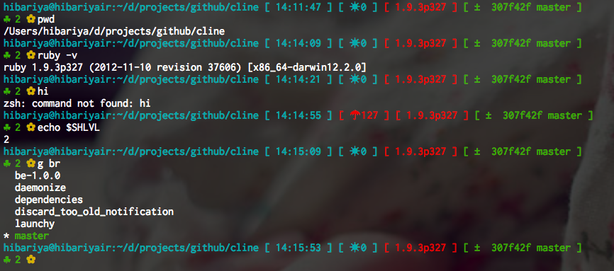

2013-01-02
PROMPTを2階建てにした
結構前からだったのだけど、oh-my-zsh が割と良くて乗り換えたはいいが気に入ったテーマだけは見つからなかったので自分で適当に変えたのだった。 いままでは雑多な情報はRPROMPTに出すようにしていたのだけど、同僚から影響を受けて二階建てに。 (Kinesis といい Funtoo といい、去年は何かと影響を受けまくり)

カスタマイズしているうちにごちゃごちゃしてしまった PROMPT が出しているのはこんなの。
- ユーザ@ホスト:今居る場所
- 時刻
- 直前のコマンドの戻り値
- Ruby のバージョン
- git リポジトリの状態・ハッシュの先頭数文字・ブランチ
- $SHLVL
いろいろ表示している情報はたまに便利に思うこともあるけど、割と自己満足なのでPROMPT="%% "とかにしてもたぶん生活には困らない。
今年もよろしくお願いします。